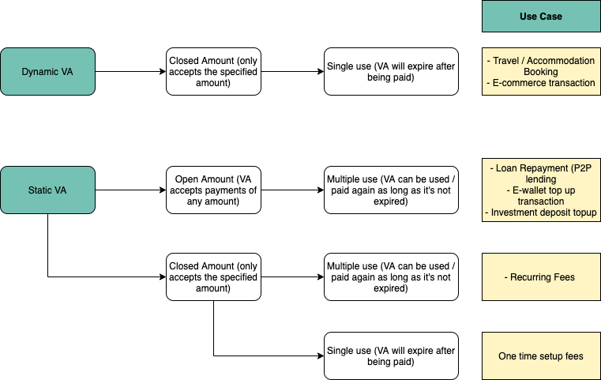

VA Payment Flow
Users will be able to pay into a Virtual Account through ATM, Mobile Banking, and Internet Banking.
Key Features
- Support multiple banks - Currently, we support virtual accounts (VA) at 6 banks: BCA, BNI, Mandiri, BRI, Permata, and CIMB Niaga
- Real-time settlement for majority of the banks - Payment into a VA will settle in your Transfez B2B dashboard on a real-time basis for the majority of the banks
- Transaction tracking and monitoring capability - You can track all created VA, incoming payments, and their respective details through our API callback or the Transfez B2B dashboard. You will receive a callback all incoming transactions.
- Customizable VA types - Refer to the table below for more informations on various types of VA:
| Type/Feature | Description |
|---|---|
| Static Virtual Account | VA that has a lifetime validity. It will always be active until it is manually deactivated |
| Dynamic Virtual Account | VA that has a specific validity period. It will always be active until it is expired or manually deactivated |
| Closed Amount Virtual Account | VA that only accepts payment of a specific amount/declared amount |
| Opened Amount Virtual Account | VA that accepts payment of any amount |
| Single Use Virtual Account | VA that expires after a single payment. A single use configuration set up for both dynamic and static VA |
| Multiple Use Virtual Account | VA that only expires when expiration date is reached or when it is manually deactivated |
Use Cases
